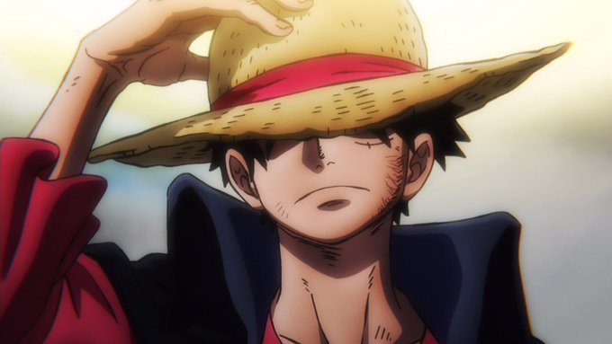
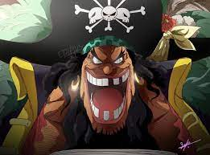
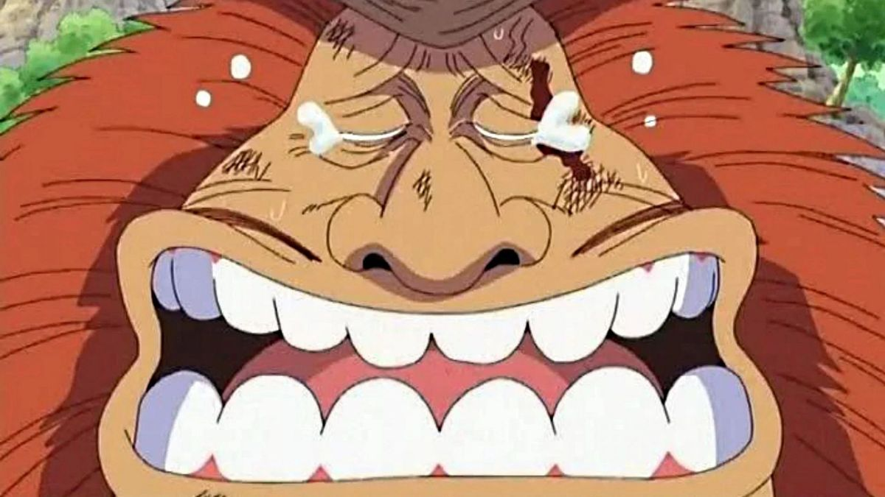
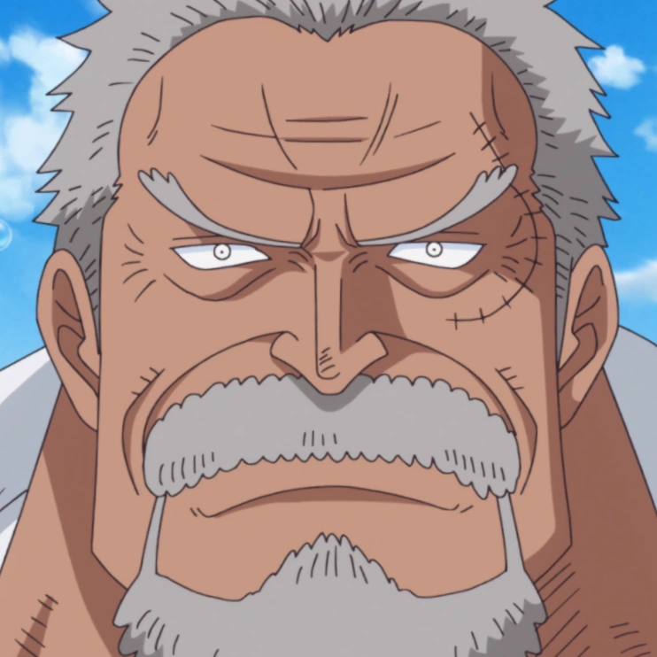
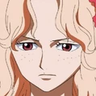
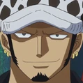
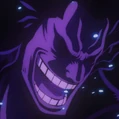

A vontade dos D.
A "Vontade de D.", é um mistério em torno de algumas pessoas que têm a inicial do meio "D." em seus nomes.
O conceito de aqueles que possuem a "D" são "Inimigos Naturais de Deus" pode ir além dos Tenryuubitos, como Enel, que se declarava como um Deus e foi derrotado por Monkey D. Luffy.
Portadores do D.
|  |
 |
 |
 |
 |
Monkey D. Luffy |
Gold D. Roger |
Portgas D. Ace |
Marshall D. Teach |
Jaguar D. Saul |
|  |
 |
 |
 |
 |
Monkey D. Garp |
Monkey D. Dragon |
Portgas D. Rouge |
Trafalgar D. Water
Law |
Rocks D. Xebec |
O Mistério dos D.
Foi apontado pela primeira vez em um SBS, onde foi perguntado o que o "D." no nome do Luffy significa, Oda respondeu que vai revelar a verdade durante o tempo. Esse foi o primeiro sinal de Oda para um mistério maior.
Kureha foi a primeira a mencionar a "Vontade de D." quando ela revelou que o verdadeiro nome do falecido Rei dos Piratas foi Gol D. Roger e não Gold Roger. Ela disse ao Dalton que Chopper se juntou-se com um homem muito perigoso, no caso Luffy por ter "D." em seu nome. E também disse que a "Vontade de D." ainda vive.
O "D." também foi mencionado por Nico Robin três vezes, sendo a primeira quando ela salvou Luffy da areia movediça em Alabasta, ela perguntou ao Luffy sobre o significado do "D." e por aqueles com esse nome sempre lutam, mas ele não tinha ideia. A segunda foi quando Robin estava falando com Gan Fall, Gan mencionou que a Luffy deixou a mesma impressão de Gol D. Roger. A terceira vez foi quando Robin perguntou para Silvers Rayleigh sobre o significado da "Vontade de D.", perguntado sobre o Século Perdido, ao mesmo tempo. Ele não respondeu sobre o que o "D." representava, mas afirmou que eles (Piratas do Roger) tinham descoberto sobre o Século Perdido; no entanto, Robin recusou sua oferta para contar a ela sobre isso, decidindo que vai descobrir a verdade por si mesma.
Diferente de Luffy que revela seu nome por completo, há alguns com o "D." que tentam manter em segredo, como Trafalgar Law.
Uma pista sobre aqueles que carregam o "D." foi deixada por Jaguar D. Saul, que disse especificamente que, embora ele não sabia o significado da inicial, ele sabia que todos na sua família levam em seus nomes. Um exemplo da natureza hereditária "D" pode ser visto na família Monkey, que consiste em Monkey D. Luffy, seu pai biológico Monkey D. Dragon, e seu avô Monkey D. Garp. Isso, no entanto, não implica necessariamente que todos os "D." estão intimamente relacionados; alguns dos "D.", com sobrenome diferente tiveram filhos, como visto com Portgas D. Rouge e Gol D. Roger, que são pais de Ace.
Durante um flashback, Gol D. Roger reclama que o Governo Mundial está o chamando de "Gold Roger" em vez de seu nome real. Barba Branca perguntou o que é "D" e, Roger enigmaticamente concordou em explicá-lo, mas não foi mostrado a explicação. Mais tarde, ele observou durante a Batalha de Marineford que matar alguém com um "D." não extingui as chamas de sua vontade porque alguém acabaria por herdar essa vontade e continuar o desejo de Roger.
Mais tarde, a Law em voz alta disse que a "Vontade de D." irá trazer a tona uma tempestade novamente. Ainda não está claro exatamente o que ele queria dizer. No arco Pós-Guerra, um dos Gorosei afirmou que "D" significa perigo.
Quando Donquixote Rosinante descobriu que Law era um "D." ele o repreendeu por isso e disse que Law não devia se aproximar do Doffy. Depois Rosinante disse que Law era da Família Condenada dos "D". Rosinante disse para Law que no país que ele veio as pessoas contam para as crianças que se elas não se comportassem os "D." iriam comê-las, e que sempre que um "D" faz seu nome ser ouvido os mais velhos dizem que os "D" trarão outra tempestade novamente. Rosinante também disse que pessoas vem herdando o "D" secretamente em vários lugares do mundo, e que em algum lugar os "D" são chamados de "Inimigos Naturais de Deus". De acordo com Rosinante, os "D" são considerados o inimigo natural dos Tenryuubitos, que geralmente são considerados como Deuses.
Vontade Herdada
Não está claro qual é o significado do "D.", mas parece que todos compartilham uma fé semelhante em seus próprios (e de outros) sonhos e/ou destino. Sempre que um "D." aparece, uma série de grandes eventos pode ocorrer, incluindo guerras, mudanças no governo e o alvorecer de uma nova era.
Um mistério do D. é que a maioria das pessoas que o carregam não sabem completamente o que significa. Jaguar D. Saul exibia uma falta de conhecimento sobre o assunto quando Nico Robin perguntou-lhe o que significava. Da mesma forma, quando ela perguntou a Monkey D. Luffy ele também não sabia responder a pergunta. No entanto, parece que os marinheiros tem alguma consciência sobre isso, como Sengoku que mostrou interesse em Ace por causa disso.
Os pais de Trafalgar Law também pareciam ter algum conhecimento sobre o que "D." significava, considerando que, embora eles passaram o inicial do meio para Law, ele manteve em segredo. Gol D. Roger é o primeiro e, até o momento, único portador conhecido de "D" na história por ter descoberto o seu significado.
Aqueles que carregam o "D." só se rendem a morte quando eles sabem que é realmente inevitável. Na mesma linha é um comportamento incomum que parece ser comum aos "D.": eles são muitas vezes vistos rindo ou sorrindo antes de morrer, como se eles aceitassem o seu destino e sem medo da morte.
Até agora, este estranho hábito foi mostrado 5 vezes:
- Testemunhas afirmam que Gol D. Roger morreu sorrindo durante sua execução.
- 22 anos mais tarde uma dessas testemunhas, Smoker, também testemunhou Luffy sorrindo da mesma maneira como quando Gol D. Roger enquanto Buggy estava prestes a matá-lo.
- Nico Robin também testemunhou Saul rindo e sorrindo quando ele foi congelado até a morte.[
- Portgas D. Rouge é vista sorrindo durante a nomeação de Ace antes de sua morte, como resultado do parto.
- Portgas D. Ace estava sorrindo depois que ele agradeceu a todos por amá-lo logo antes de sua morte.
- Ace morreu com um sorriso no rosto.
No entanto, Marshall D. Teach mostrou um medo da morte. Quando Barba Branca o atacou em Marineford, Barba Negra começou a entrar em pânico e ficou com medo dizendo "Você não faria isso com o seu filho, não é?".
referências da teoria
- SBS - Volume 8.
- Mangá e Anime - Vol. 17 Capítulo 154 (p. 7-8) e Episódio 91.
- Mangá e Anime - Vol. 20 Capítulo 180 (p. 4-5) e Episódio 111.
- Mangá e Anime - Vol. 76 Capítulo 763 (p. 16) e Episódio 702
- Mangá e Anime - Vol. 41 Capítulo 392 (p. 14) e Episódio 95
- Mangá e Anime - Vol. 59 Capítulo 576 (p. 13) e Episódio 485.
- Mangá e Anime - Vol. 73 Capítulo 729 (p. 6) e Episódio 661.
- Mangá e Anime - Vol. 76 Capítulo 763 (página 18) e Episódio 702.
- Mangá e Anime - Vol. 77 Capítulo 764 (p. 7-8) e Episódio 703.
- Mangá e Anime - Vol. 41 Capítulo 392 (p. 14) e Episódio 275
- Mangá e Anime - Vol. 57 Capítulo 552 (p. 6) e Episódio 461.
- Mangá e Anime - Vol. 59 Capítulo 576 (p. 12) e Episódio 485.
- Mangá e Anime - Vol. 11 Capítulo 99 (p. 17) e Episódio 52.
- Mangá e Anime - Vol. 41 Capítulo 397 (p. 15) e Episódio 278.
- Mangá e Anime - Vol. 56 Capítulo 551 (p. 6) e Episódio 460.
- Mangá e Anime - Vol. 58 Capítulo 573 (p. 6) e Episódio 482.
O Século perdido
O "Século Perdido" é um dos elementos misteriosos e intrigantes da história de One Piece. Embora não haja informações definitivas sobre o Século Perdido, existem algumas teorias populares que surgiram entre os fãs da série.
Reino do Século perdido
De acordo com essa teoria, o Século Perdido refere-se a um período da história de One Piece em que existia um grande reino avançado e poderoso. Esse reino teria sido destruído ou ocultado por algum evento catastrófico, deixando apenas ruínas e fragmentos de informações. Os personagens de One Piece estão em busca dessas pistas para desvendar os segredos do Século Perdido.
Void Century(Século Vazio)
Void Century (Século Vazio): Essa teoria sugere que o Século Perdido está relacionado ao Void Century mencionado na série. O Void Century é um período de 100 anos da história que foi apagado dos registros e conhecimentos comuns. Acredita-se que informações importantes sobre a Grande Guerra, a história dos Poneglyphs (pedras de história) e a verdadeira natureza do Governo Mundial estejam ocultas nesse período.
Tecnologia Avançada
Outra teoria é que o Século Perdido foi uma época de avanço tecnológico significativo. Alguns especulam que esse período envolveu a criação de armas poderosas ou mesmo a descoberta de tecnologias capazes de alterar o mundo de One Piece. Essas inovações podem estar diretamente relacionadas às armas antigas e aos Poneglyphs.
Os D.
Alguns fãs especulam que o Século Perdido está intrinsecamente ligado ao "D.", um misterioso sobrenome compartilhado por várias figuras importantes na história. Acredita-se que o D. esteja associado a eventos do Século Perdido, e sua verdadeira natureza e significado podem ser revelados ao longo da narrativa.
O criador da série, Eiichiro Oda, mantém um alto grau de mistério em torno do Século Perdido, e somente o desenvolvimento futuro da história revelará os detalhes e a verdade por trás desse período enigmático.